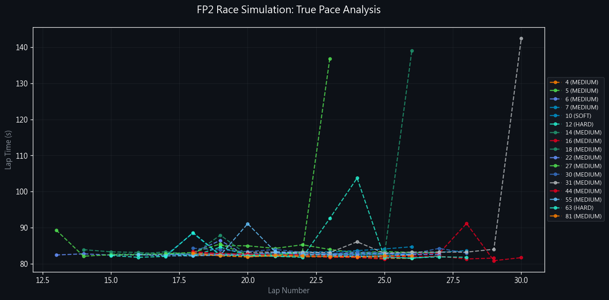

🇦🇺 2025 Australian GP FP2 Analysis
Full Session Report: Corner Anlaysis & Race Simulations
🏎️ Track DNA & Strategy Briefing
📊 Historical Intelligence (2022-2025)
- Chaos Factor: Recent history saw 4 Red Flags and 13 Safety Cars.
- Overtaking: 128 overtakes (2023), proving DRS effectiveness.
- SC Probability: High (65%). Best strategy: "Cheap Pitstop".
- Key Risk: T1 Lap 1 Chaos.
🏆 Podium History
| Year | P1 | P2 | P3 |
|---|---|---|---|
| 2025 | NOR (McLaren) 82.167s | VER | RUS |
| 2024 | SAI (Ferrari) 80.031s | LEC | NOR |
| 2023 | VER (Red Bull Racing) 80.342s | HAM | ALO |
| 2022 | LEC (Ferrari) 80.260s | PER | RUS |
⚠️ High Risk Corners
| Turn | Incidents | Risk |
|---|---|---|
| T1 | 2 | High Risk |
| T6 | 1 | High Risk |
| T12 | 2 | High Risk |
🗺️ Overtake Hotspots & Strategy Map

🔧 Setup & Tyres
🌡️ Environmental Conditions
| Start | End | Delta | |
|---|---|---|---|
| Air Temp | 24.3°C | 22.9°C | ▼ Cooling |
| Track Temp | 43.3°C | 37.7°C | ▼ Cooling |

- Aero Compromise: Drag vs Traction. High downforce preferred for T3/T13 stability.
- Graining Risk: As track temperature drops (End: 37.7°C), soft tyres are prone to cold graining. Mediums are the safer race tyre.
- Brake Wear: Heavy braking into T3 (300kph -> 90kph) requires high initial bite.
🧠 Tyre Strategy Analysis (Stint History)
Track Condition Insight: Assessment based on track conditions.
The Gantt chart below details the tyre compound usage and stint lengths for every driver in the session.

Soft
Medium
Hard
📊 Acceleration & Brake Analysis
🚀 Speed vs Acceleration

🛑 Brake Efficiency & Consistency

📈 Performance Distribution & Insights
- Alpine (GAS) & Outlier Performance: Gasly demonstrates exceptionally high acceleration figures combined with strong top speed, suggesting a potentially aggressive engine mode or lower fuel load during his fast laps.
- Red Bull (VER) Efficiency: Max Verstappen shows competitive top speeds but moderate average acceleration, characteristic of a highly efficient, low-drag setup that prioritizes straight-line maintenance over initial burst.
- Braking Kings: Aston Martin (ALO) and Mercedes (HAM) exhibit the highest deceleration forces, indicating superior mechanical grip on entry and driver confidence in the braking zones.
- Consistency: The bubble sizes in the Brake Analysis indicate that most top drivers are maintaining highly consistent braking pressure, with minimal variation lap-to-lap.
🛑 T13 - Low Speed Hairpin
No driver telemetry data available for this corner.
🔄 T3 - Mid Speed Corner
No driver telemetry data available for this corner.
🚀 T2 - High Speed Kink
No driver telemetry data available for this corner.
🏁 Technical Deep Dive: Race Simulations
📈 True Race Pace Analysis (Stints >= 8 Laps)
Comparison of high-fuel race simulation stints. Drivers are grouped by compound and ranked by Average Pace. Dotted lines in the chart below represent the degradation trend.
🏆 Competitive Verdict (Team Advantage)
- Medium Compound Dominance: 4 sets the benchmark with a 81.921s average, holding a 0.253s advantage over 81.
- High Degradation Alert: 14, 27, 31 are struggling with thermal management (>0.1s/lap drop).
- Crossover Insight: The Hard compound is approximately -0.464s slower than the Medium, making it a viable race tyre if degradation is managed.

🛠️ Vehicle Setup Analysis & Teammate Comparison
Red Bull Racing
VER / LAW
- Both drivers show very similar setup characteristics with negligible performance delta across the lap.
McLaren
NOR / PIA
- Both drivers show very similar setup characteristics with negligible performance delta across the lap.
Kick Sauber
BOR / HUL
- Both drivers show very similar setup characteristics with negligible performance delta across the lap.
Racing Bulls
HAD / TSU
- Both drivers show very similar setup characteristics with negligible performance delta across the lap.
Alpine
DOO / GAS
- Both drivers show very similar setup characteristics with negligible performance delta across the lap.
Mercedes
ANT / RUS
- Both drivers show very similar setup characteristics with negligible performance delta across the lap.
Aston Martin
ALO / STR
- Both drivers show very similar setup characteristics with negligible performance delta across the lap.
Ferrari
LEC / HAM
- Both drivers show very similar setup characteristics with negligible performance delta across the lap.
Williams
ALB / SAI
- Both drivers show very similar setup characteristics with negligible performance delta across the lap.
Haas F1 Team
OCO / BEA
- Both drivers show very similar setup characteristics with negligible performance delta across the lap.